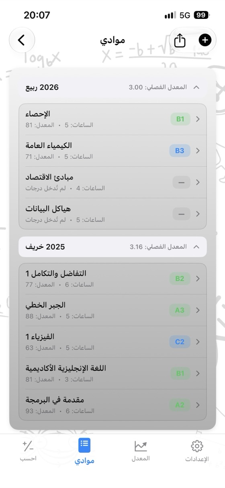
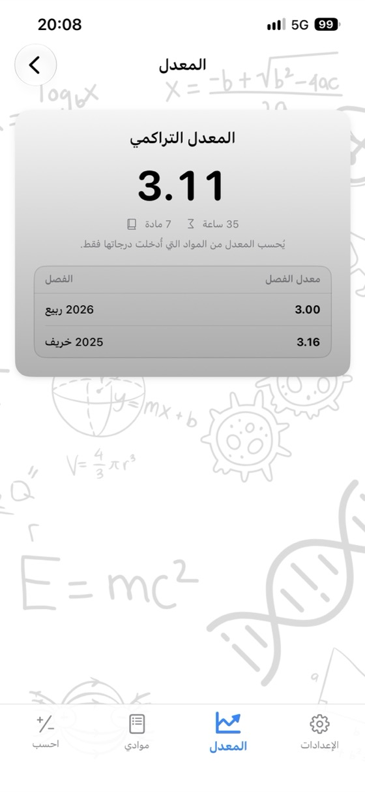
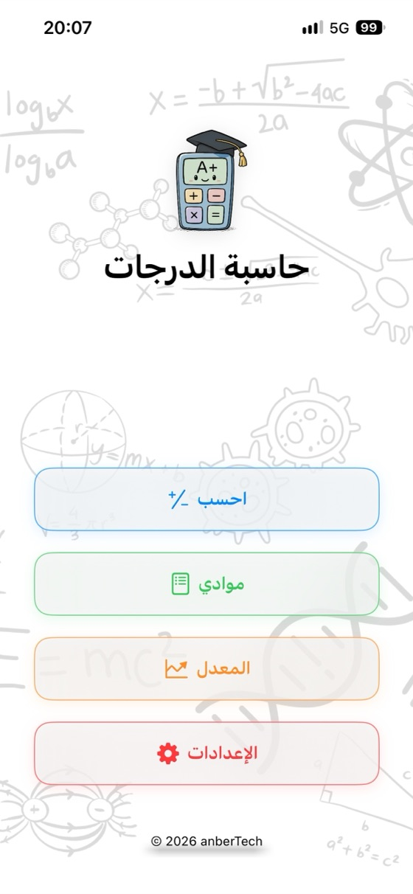
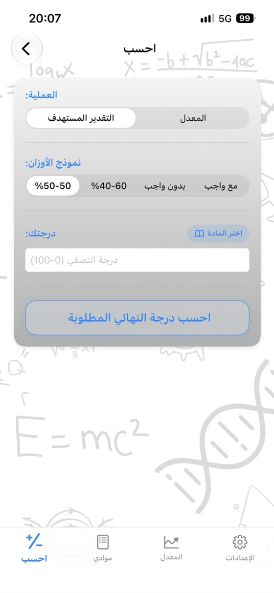
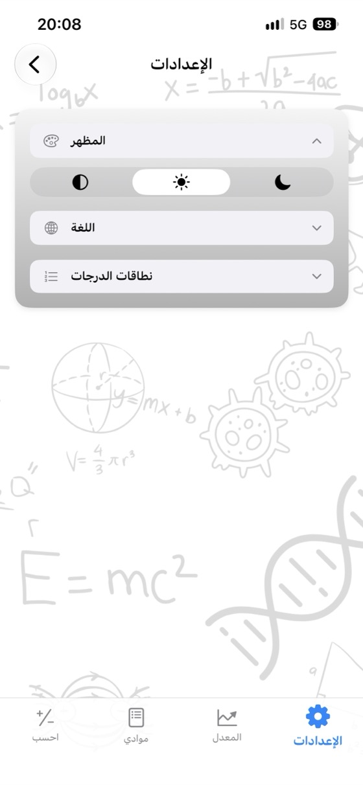

اعرف درجتك،
وخطط لمستقبلك.
معدل المادة ودرجة الاختبار النهائي التي تحتاجها ومعدلك التراكمي GPA في تطبيق واحد. بلا إعلانات أو حساب، ويعمل بالكامل دون اتصال.
- ✓ مجاني
- ✓ بلا إعلانات
- ✓ بلا حساب
- ✓ يعمل دون اتصال


احسب الآن
جرّب الحاسبة هنا قبل تنزيل التطبيق. غيّر القيم وستتحدث النتيجة فورًا.
وزن الاختبار النهائي: 60%
وزن الاختبار النهائي: 60%
حاسبات مجانية
استخدمها في متصفحك دون تنزيل أي شيء. لا يلزم التسجيل، والدرجات التي تدخلها لا تغادر جهازك أبدًا.
لماذا حاسبة الدرجات؟
معدل المادة
أدخل درجات النصفي والنهائي والواجب مع أوزانها، وشاهد معدلك وتقديرك الحرفي فورًا.
درجة النهائي المطلوبة
اعرف الحد الأدنى المطلوب في الاختبار النهائي لكل تقدير حرفي على شاشة واحدة.
متابعة المعدل التراكمي GPA
احفظ موادك فصلًا بعد فصل، وسيُحدّث معدلك الفصلي والتراكمي تلقائيًا.
سلم التقديرات الخاص بك
عدّل نطاقات التقديرات الحرفية ونقاطها لتطابق نظام جامعتك.
تقرير الدرجات بصيغة PDF
شارك موادك ومعدلك بصيغة PDF بنقرة واحدة.
17 لغة
الإنجليزية والإسبانية والألمانية واليابانية والعربية والتركية وغيرها.
الخصوصية أولًا
بلا حساب أو إعلانات أو تتبع. تظل بياناتك على جهازك.
يعمل دون اتصال
لا حاجة إلى الإنترنت، سواء في أسبوع الاختبارات أو المكتبة أو أي مكان.
نظرة على التطبيق



الأسئلة الشائعة
كيف أحسب معدل المادة؟
اضرب كل درجة في وزنها ثم اجمع النتائج. إذا كان وزن النصفي 40% ووزن النهائي 60%: المعدل = النصفي × 0.40 + النهائي × 0.60. درجة 62 في النصفي و75 في النهائي تعطي 62 × 0.40 + 75 × 0.60 = 69.8. إذا كان لديك واجب، فأضف درجته الموزونة أيضًا؛ ويجب أن يكون مجموع الأوزان 100%.
كم أحتاج في الاختبار النهائي للنجاح؟
النهائي المطلوب = (المعدل المستهدف − درجة النصفي × وزن النصفي) ÷ وزن النهائي. إذا حصلت على 55 في نصفي وزنه 40% وكان معدل النجاح 50: (50 − 22) ÷ 0.60 = 46.7، لذا تحتاج إلى 47 على الأقل في النهائي. تحسب حاسبة الدرجات ذلك لكل التقديرات الحرفية دفعة واحدة.
كيف يُحسب المعدل التراكمي GPA؟
اضرب نقاط تقدير كل مادة (A = 4.0، B = 3.0 …) في ساعاتها، ثم اجمع النتائج واقسمها على إجمالي الساعات. الناتج هو المعدل التراكمي على مقياس 4.0.
هل نطاقات التقديرات الحرفية موحدة في كل مكان؟
لا. تختلف النطاقات ونقاط التقديرات بين الدول والجامعات، بل وحتى بين المواد. يمكنك تعديل سلم التقديرات في التطبيق ليطابق نظامك تمامًا.
ما الحد الأدنى لدرجة الاختبار النهائي؟
تعدّك بعض الجامعات راسبًا إذا كانت درجة الاختبار النهائي أقل من حد معين (مثل 30 أو 45 أو 50)، حتى لو كان معدلك كافيًا. أدخل الحد الأدنى وستراعيه الحاسبة عند حساب درجة النهائي المطلوبة.
هل حاسبة الدرجات مجانية؟
نعم. التطبيق مجاني على App Store، بلا إعلانات أو اشتراك أو مشتريات داخل التطبيق. كما أن حاسبات الموقع مجانية أيضًا.
أين تُحفظ درجاتي؟
على جهازك فقط. لا تحتاج إلى حساب، ولا يُرسل أي شيء إلى خادم. الدرجات التي تدخلها في حاسبات الويب لا تغادر متصفحك أبدًا.
هل يوجد إصدار Android؟
سيصل إصدار Android قريبًا إلى Google Play. التطبيق متاح حاليًا لأجهزة iPhone وiPad (بنظام iOS 17.6 أو أحدث) على App Store.
تابع جميع موادك في مكان واحد
مجاني. بلا إعلانات. بلا حساب.